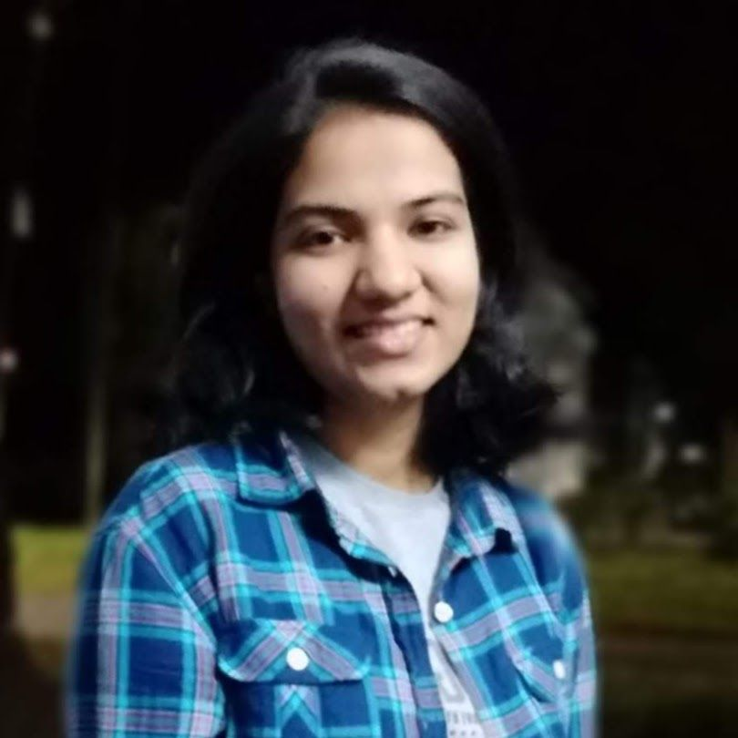

About me
I am Shivangi Yadav, a Research Associate-I in the Department of Mathematics, Indian Institute of Science, Bengaluru, where I work under the mentorship of Prof. Apoorva Khare. My research is centered on problems involving matrix positivity and preserver problems. More specifically, I work on characterizing sign regularity and its preservers.
You can find my curriculum vitae here.
Work experience and education
-
Research Associate-I in Mathematics,
Indian Institute of Science, Bengaluru
(Apr 2026 – present)
Mentor: Prof. Apoorva Khare -
Postdoctoral Fellow in Mathematics,
Indian Institute of Technology Gandhinagar
(Jan 2026 – Apr 2026)
Mentor: Prof. Projesh Nath Choudhury -
Ph.D. in Mathematics,
Indian Institute of Technology Gandhinagar
(Jan 2021 – Jan 2026)
Thesis title: Sign regularity: variation diminishing property and preserver problems
Advisor: Prof. Projesh Nath Choudhury - M.Sc. in Mathematics, National Institute of Technology Rourkela (2018 – 2020)
- B.Sc. (Hons.) in Mathematics, Hansraj College, University of Delhi (2015 – 2018)